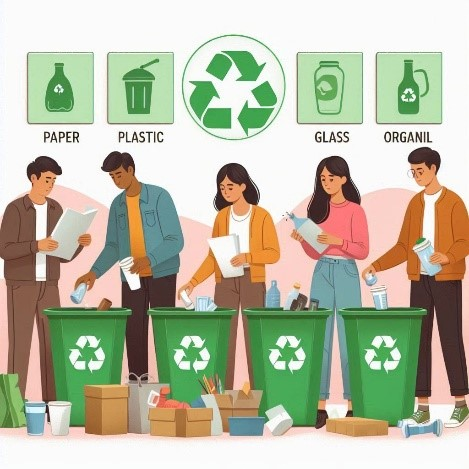
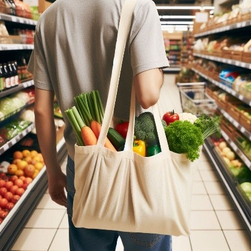
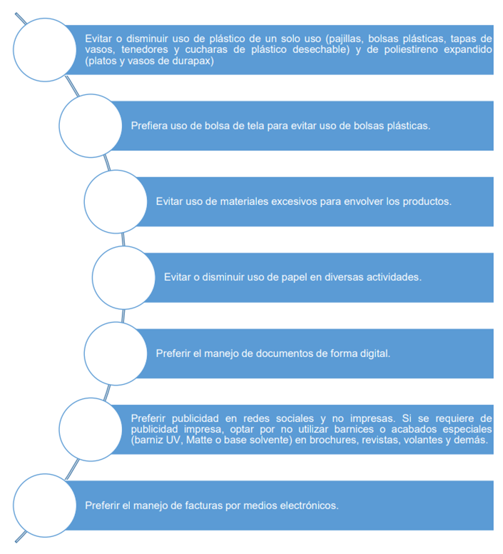
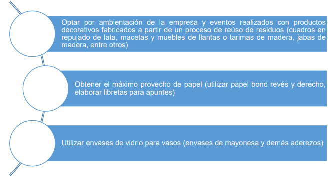

“Normalmente cuando ustedes van con un niño y le preguntan ¿Qué hay que hacer con el plástico? Y nos han metido tanto la idea que la primera respuesta es: “reciclar el plástico”, nunca está la R de Rechazo, Reduzco, Reusó, Reciclo, la primera R es Reciclar y debería ser la última, el reciclaje es importante hay que hacerlo y es lo que propone la industria del plástico, pero primero hay que Rechazar y Reducir”
Sergio Izquierdo, Fundador de Rescue the Planet, una organización que enfoca sus esfuerzos en la educación y concientización para un planeta más limpio.
El concepto de valorización se entiende como el proceso de cuantificar el valor intrínseco de los diferentes componentes de los residuos sólidos, sean estos orgánicos e inorgánicos. La valorización comercial de los residuos sólidos implica la separación, recuperación y aprovechamiento de sus diferentes componentes, que son considerados un recurso inicial de procesos productivos; es decir los residuos sólidos pasan a contar con condiciones técnicas y comerciales aptas para ser considerados materias primas de procesos productivos. (Espinosa, P. Campani, D y Sarafian, D. 2018, pág. 94)
El reciclado de materiales en procesos productivos involucra que se debe reconocer a los diferentes materiales recuperados no como residuos sino como materias primas que serán incorporadas nuevamente a los procesos industriales; siendo necesario identificar en cada caso el real potencial de su demanda (Espinosa, P. Campani, D y Sarafian, D. 2018, pág. 94)
Reciclar: Consiste en usar los materiales varias veces para elaborar otros productos
reduciendo en forma significativa la utilización materias primas.
Reincorporar recursos ya usados en los procesos para la producción de nuevos
materiales ayuda a conservar los recursos naturales ahorrando energía, tiempo
y agua que serían empleados en su fabricación a partir de materias primas.
Berenguer, M. Trista, J. Deas, D. (2006).
Reciclar significa enviar materiales desechados a procesos industriales, en sustitución de materiales vírgenes. (SEMARNAT) (2015)
El reciclado puede efectuarse mediante la separación de los componentes presentes en las basuras, para su recuperación directa, dando así origen a lo que se conoce como "recogida selectiva". (CEPAL, 2016)

El reciclado de materiales en procesos productivos involucra que se debe reconocer a los diferentes materiales recuperados no como residuos sino como materias primas que serán incorporadas nuevamente a los procesos industriales; siendo necesario identificar en cada caso el real potencial de su demanda (Espinosa, P. Campani, D y Sarafian, D. 2018, pág. 94)
Rescue The Planet. (2021). El camino de la vergüenza
Reducir: La reducción de residuos se refiere a disminuir la cantidad de desperdicios que producimos. Para ello es muy importante reflexionar en torno a lo que consumimos, observar nuestros residuos actuales y preguntarnos: ¿Qué hay en ellos, qué tipo de materiales estamos desechando? ¿Algunos de estos materiales pueden reutilizarse, repararse o donarse? ¿Se pueden sustituir estos productos por algunos sin empaque o con empaques de menor impacto ambiental? (SEMARNAT) (2015).


Reutilizar: Existen en el mercado productos diseñados para ser utilizados más de una vez (lo que era mucho más común hasta mediados del siglo pasado). Esto ayuda a reducir los costos del manejo de residuos. Muchos objetos de la vida diaria pueden tener más de un uso. Al reutilizar un producto, extendemos su vida útil y dejamos de emplear materiales y recursos nuevos. (SEMARNAT) (2015)
